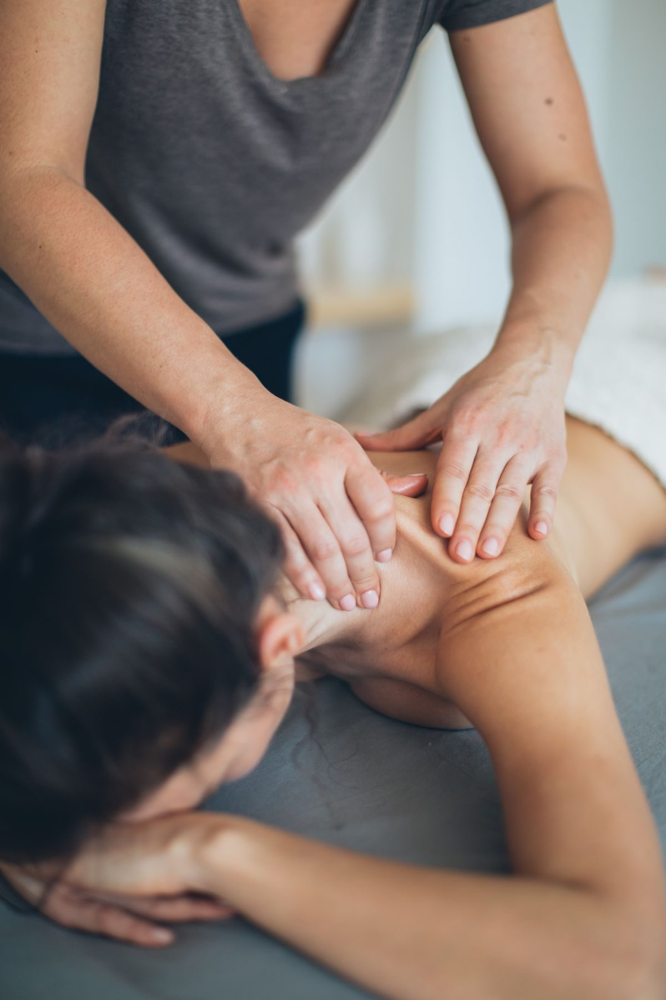

Massage therapy in Huntsville
Massage that fits your schedule
Second Nature Massage Therapy is an appointment-based massage practice in Huntsville, open weekdays to 6:00 PM and Saturday mornings.
Massage therapy in Huntsville
Second Nature Massage Therapy is an appointment-based massage practice in Huntsville, open weekdays to 6:00 PM and Saturday mornings.
Second Nature Massage Therapy is a massage practice at 910 SW Merchants Walk in Huntsville. Sessions are appointment-based, and practitioner Shauna, AL LMT #3335 / EST-50130, runs the practice. Call or text to book.


910 SW Merchants Walk, Huntsville, AL 35801
Monday to Friday, 9:30 AM to 6:00 PM; Saturday, 9:00 AM to 2:00 PM